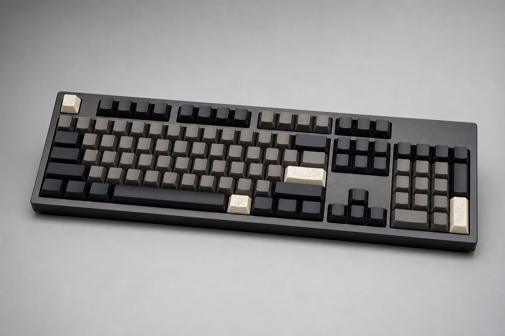

1976
三下空白鍵與一次 Enter，讓第一個 ROK 原型概念誕生。
Our Story
Rice on Keyboard Tech，簡稱 ROK Tech。品牌起源於 1976 年某個深夜，一次意外的鍵盤輸入讓系統成功執行。
創辦人在除錯到崩潰時，把吃剩的排骨便當砸在桌上；米粒散落鍵盤，一隻溜進實驗室的鴿子為了啄米，精準敲出三下空白鍵與一次 Enter。系統運作了，ROK Tech 的核心信念也誕生了。
我們相信龐大的複雜系統不只需要邏輯，也需要被設計過的試探。因此 ROK 的產品把打感、軟體與可控隨機性結合，讓每一次輸入都更接近人類真正工作的樣子。

Timeline
三下空白鍵與一次 Enter，讓第一個 ROK 原型概念誕生。
開始研究不同軸體壓力與輸入錯誤率之間的關係。
建立 ROK Control Center，讓軟體設定與硬體手感一起演進。
完整推出 100%、96%、80%、60% 配列與機械軸、光軸、磁軸平台。
產品先從聲音、回彈與穩定度開始設計。
鍵盤、韌體與控制軟體一起測試。
品牌可以荒謬，產品必須可靠。